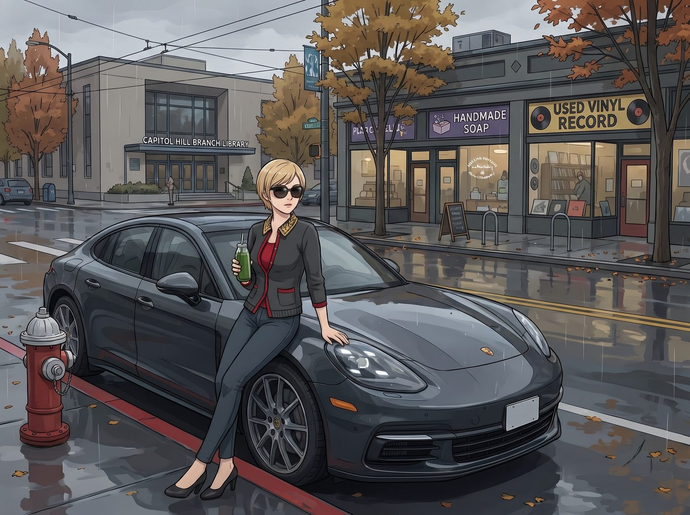

大地色系

一、剛好路過
二〇一九年十一月，西雅圖國會山莊。
一輛深灰色的保時捷 Panamera 停在社區圖書館對面的路邊，車頭剛好壓在消防栓前面那段紅線上。
Victoria 戴著一副寬框墨鏡，靠在車門上，手裡拿著一杯冷壓羽衣甘藍汁，姿態放鬆，彷彿她只是在這條滿是手工皂店和二手黑膠行的街上迷了路，剛好停下來喝口東西。
那杯羽衣甘藍汁她只喝了兩口。她已經在這裡站了四十分鐘。
圖書館的玻璃門開了。Kate 抱著一疊精裝童書走出來——她每週四下午在這間分館的兒童區做說故事志工——一抬頭，就看見了街對面那輛車。
Victoria 立刻站直，把那杯綠色的東西準確地丟進旁邊的分類回收桶，摘下墨鏡。
「Marsh。真巧。」她的語氣拿捏得剛剛好，不熱情，也不刻意，「我剛好在附近看一個展。這一帶計程車難叫得要命。上車吧，順路載妳回去。」
Kate 看了看她那件一塵不染的駝色羊絨大衣，又看了看這條街。整條街上，除了獨立咖啡館就是二手衣店，最近的畫廊在三個街區以外，而且週四不開門。
她溫柔地笑了笑，什麼都沒戳破。
「謝謝妳，Victoria。真是幫了大忙。」
兩人正要上車，一個穿著粗麻布連帽衫、背著「反對消費主義」帆布袋的年輕男人經過。他的目光在那輛擦得發亮的保時捷和 Victoria 的大衣之間來回掃了兩遍，發出一聲很響的冷笑。
「漂亮的碳排放啊，公主。」他故意提高音量，對身邊的同伴說，「信託基金大概夠買下整條街的碳權了吧。」
Victoria 的眼神一下子冷了。
她往前邁了半步，腦子裡已經排好了三段反擊，第一段的開頭是「你這件有機棉連帽衫的產地」——
一隻柔軟的手搭上了她的手腕。
Kate 上前半步，剛好擋在兩人中間，臉上帶著那種曾經在無數個糟糕日子裡安撫過別人的、毫無破綻的微笑。
「抱歉，這輛車讓你不舒服了。」她說，語氣真誠得讓人生不起氣來，「你這麼在乎環境，真的很好。」
男人準備好的下一句話卡在了喉嚨裡。
「不過，」Kate 繼續說，「我們等一下要去買二十套睡袋和冬衣，送去 SoDo 那邊的庇護所。這輛車的後車廂比較大，我的車大概連五套都塞不下。」她看了看他的帆布袋，眼神裡甚至帶著點欽佩，「你也一定很關心這些事吧？庇護所晚上六點需要志工幫忙發熱湯，我們可以順路載你過去。」
男人的臉紅一陣白一陣。他看了看 Kate，又看了看她身後那個正在努力控制嘴角肌肉的女人。
「呃……不用了。」他含糊地說，「我等一下還有個集會。」
他拉著同伴快步過了馬路。
Panamera 的車門關上。真皮座椅散發著淡淡的皮革香，Victoria 握著方向盤，轉頭看著正在繫安全帶的 Kate。
「Marsh，」她說，「我們什麼時候說要去買睡袋了？」
「我說的是『我們』。」Kate 把童書疊好放在膝蓋上，「我這週本來就約好了要去庇護所送東西。只是今天剛好多了一個司機。」
Victoria 張了張嘴。
「……妳從一開始就知道我不是剛好路過。」
「下一個路口右轉。」Kate 對她露出一個無辜的微笑，「然後上 I-5 往南。」
「往南？」
「西雅圖市區裡，」Kate 說，「一間沃爾瑪都沒有。最近的在倫頓。」
Victoria 沉默了兩秒。
「這座城市，」她發動引擎，「連沃爾瑪都嫌棄。我開始有點尊敬它了。」
二、品管模式
倫頓沃爾瑪的冷白色螢光燈，打在那件手工訂製的羊絨大衣上，怎麼看都不對勁。
一開始，Victoria 確實保持著她預想中的姿態。她站在戶外用品區的走道正中間，雙臂抱胸，手裡拿著手機，螢幕上是某個巴黎品牌的私人預覽會。她跟兩邊的貨架保持著至少半公尺的距離，彷彿那些標價二十九塊九毛九的東西會傳染什麼。
Kate 推著一輛輪子有點卡的購物車，在一整排睡袋前面認真比對標籤。
「Victoria，妳覺得這個怎麼樣？」她拿起一個深藍色的睡袋，「標籤上寫耐寒到零下五度，三個一起買有折扣。」
Victoria 從手機上抬起眼睛，只看了半秒，眉頭就皺成了死結。
她把手機塞回口袋，走過去，兩根手指捏住睡袋的邊緣，搓了搓布料，又拉了拉拉鍊。
「這個拉鍊，」她說，「連我的化妝包都不如。妳把這個送出去，他們不會變暖，只會在翻身的時候被靜電電醒。」
「可是……這已經是這排最厚的了。」
「因為這排是給在自家後院搭帳篷的人買的。」
Victoria 伸手接過了購物車。剛才那副「我只是被綁架進來的」姿態消失了，取而代之的是 Chase 家的人走進談判桌時的那種銳利。
「跟我來。」她推著車往走道深處走，一邊走一邊掃視最上層的貨架，像在檢閱一排不合格的新進員工，「看縫線，看填充物回彈的速度，看拉鍊頭是金屬還是塑膠。」
她在一排睡袋前停下來，一個接一個捏過去，最後抽出三種，在手裡掂了掂重量。
然後她抬起頭，看著整面貨架，表情忽然變得非常困惑。
「為什麼，」她說，「這裡的東西全都是螢光橘色和螢光綠？」
Kate 愣了一下：「……可能比較顯眼？」
「難道窮人就不配擁有大地色系嗎？」
Kate 沒忍住，笑出了聲。
接下來的四十分鐘，Victoria 進入了某種接近強迫症的品管模式。她把 Kate 挑的幾件特價防風外套全部掛回架上，換成角落裡沒有打折、但領口有防風片的款式；她在保溫瓶的貨架前，對三個牌子的瓶蓋密封圈批評了整整五分鐘；她拒絕了所有印著卡通圖案的毛毯，只挑深灰、墨綠和藏青。
Kate 跟在推車旁邊，聽著 Victoria 一邊抱怨這裡的燈光讓她偏頭痛，一邊毫不猶豫地把一條又一條毛毯丟進推車，嘴角的笑意越來越深。
收銀台前，滿滿兩車東西。收銀員嚼著口香糖，看了看那一車深色系的冬衣，又看了看 Victoria。
「八百四十二塊七毛五。刷卡還付現？」
Kate 剛拉開帆布包，一張黑色的卡已經帶著一陣香水味拍在了櫃台上。
「毛毯和保溫瓶分開裝，」Victoria 用指尖點了點櫃台，「然後麻煩快一點。我這件大衣再吸五分鐘這裡的空氣，就可以直接報廢了。」
三、市容
SoDo 那間庇護所在一棟外牆斑駁的紅磚建築裡。負責人是個穿著磨邊法蘭絨襯衫、眼袋很深的中年社工，叫 Dennis。
他幫著把東西從後車廂搬下來，拎起一個深灰色的睡袋，愣了一下：「這顏色……挺低調的。我們平常收到的都是那種亮到刺眼的。」
「那些螢光色，」Victoria 把墨鏡戴回去，「會嚴重破壞這座城市的市容。」
她從包裡抽出那張長長的收據，用兩根手指夾著遞給他。
「我的會計需要一份捐贈收據。照總額開，謝謝。」
Dennis 接過收據，掃了一眼總額，忽然笑了一聲，笑得有點苦。
「八百四十二塊，二十套。」他說，「一套四十出頭。」他把收據折好，「市府資助的那幾個過夜營地，去年的預算表公開了。我看了一下，攤下來，一頂帳篷一年要好幾萬。」
「帳篷本身呢？」Victoria 問。
「跟妳剛買的差不多。」Dennis 聳聳肩，「剩下的是場地、保全、管理費、顧問費……還有一堆我看不懂的項目。」
Victoria 沒有再說話。
她站在庇護所門口，墨鏡後面的眼睛沒在看任何人。Kate 認得那個表情——每次 Victoria 在腦子裡跑試算表的時候，都是這副樣子。
她名下那兩棟商辦大樓，每年的房產稅帳單她都親自看過。那筆錢是怎麼來的，她比誰都清楚：每一個月追租、每一次半夜被叫去處理漏水的電梯、每一個為了續約陪笑的下午。帳單上其中有一行，是撥給市府這類專案的。
她在心裡把那個數字，除以 Dennis 剛才說的那個「好幾萬」。
然後她的下巴，很慢很慢地，往下掉了一點。
「……所以，」她終於開口，聲音很平，「我今年等於買了兩次帳篷。一次用房產稅，一次用黑卡。」她頓了頓，「而黑卡那一次，便宜了一千倍。」
Dennis 沒有接話，只是苦笑著搖了搖頭。
Kate 一直很安靜。她看著車廂裡最後幾條深灰色的毛毯被搬進門，抱著童書的手指，不知不覺收緊了。
「那第一次的錢，」她輕聲說，「有多少，真的變成了一條毯子？」
沒有人回答她。
過了一會兒，Victoria 把墨鏡推上頭頂，從包裡掏出手機，按了幾下。
「Lily。」她對著手機說，「回去以後，把我這三年的房產稅單全部調出來。對，全部。我要看每一行的去向。」
她掛了電話，把收據重新塞回 Dennis 手裡。
「收據照開。」她說，「既然我要買兩次，至少其中一次，得是我自己挑的顏色。」
Dennis 愣了一下，然後第一次真正地笑了。
Kate 鬆開手指，輕輕拍了拍他的手臂，小聲說：「別介意。她只是不習慣別人看見她做好事。」
四、氣壓懸吊
回程的路上，Panamera 的車廂裡流淌著坂本龍一的鋼琴。十幾支揚聲器把每一個琴鍵都放得乾乾淨淨，像是有人坐在後座彈。
Chloe 開車的時候，猛禽的音響永遠在試圖用破音的吉他震碎車窗；輪到 Max 搶到副駕駛座的音響控制權，車裡就會換成那種讓人想把頭靠在窗上看雨的獨立民謠。Victoria 的車裡，只有秩序。
Kate 窩在副駕駛座上，隨著旋律輕輕點頭。Victoria 的目光始終直視前方，但等紅燈的時候，她伸手把暖氣往上調了半度，又把副駕駛座那邊的出風口往下撥了一點，讓暖風吹到 Kate 的膝蓋上。
天快黑的時候，她們排進了西雅圖碼頭的渡輪車道。
綠白相間的華盛頓州立渡輪停在碼頭邊，船艙底部張著一個黑洞洞的大口。前面的車一輛接一輛開上金屬跳板，輪胎碾過接縫，發出「哐噹、哐噹」的巨響。
Victoria 盯著那塊跳板，眉頭越皺越緊。
「每次開上這東西，」她說，「我都覺得我的氣壓懸吊在無聲地尖叫。」
輪到她們的時候，她把車速降到幾乎是在蠕動，小心翼翼地爬上跳板。穿著螢光背心的工作人員揮著指揮棒，示意她把車緊緊貼著停在一輛滿是泥巴的福特皮卡後面。
Victoria 看著那輛皮卡車斗上掛著的泥塊，閉了閉眼睛，熄了火。
「妳要待在車裡，還是上去？」
「上去吧。」Kate 已經解開了安全帶，「坐渡輪最好的部分，就是可以吹風。」
Victoria 低頭看了一眼自己身上那件不能沾水、更不能沾海鹽的大衣，絕望地嘆了口氣。
五、甲板
最上層的露天甲板上，風大得驚人。
渡輪還沒開，靠在碼頭邊微微起伏。暮色裡，西雅圖的天際線一點一點亮起燈來，太空針塔的頂端閃著紅光，海鷗在船尾上空盤旋。
Kate 趴在白色的欄杆上，看得很開心。
Victoria 雙手抱胸，整個人縮在大衣裡，精心整理過的頭髮被吹得四處亂飛。她看起來像一隻被強行抱出溫室的波斯貓。
「謝謝妳今天陪我跑這一趟。」Kate 轉過頭，被風吹亂的金髮拂過臉頰，「Dennis 剛才傳訊息來，說那些睡袋今晚就會發下去。」
Victoria 哼了一聲，試圖用手指把一撮打結的頭髮理順，失敗了。
「別誤會，Marsh。我只是沒辦法忍受有人在我眼前做出錯誤的消費決策。」
她轉過身，背靠著欄杆躲風。
「而且，」她說，「如果妳再不請我去船艙裡喝一杯熱茶，這件大衣的主人，就要在這裡凍成冰雕了。」
Kate 笑著挽住她的手臂，把她從風口拉走。